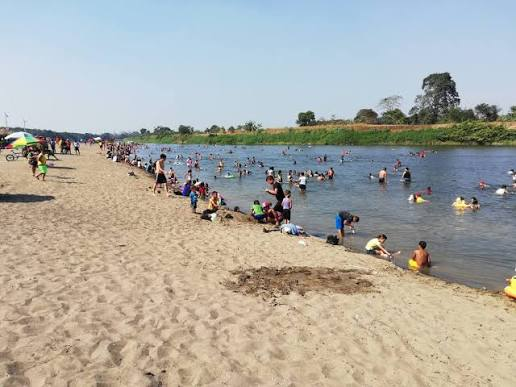
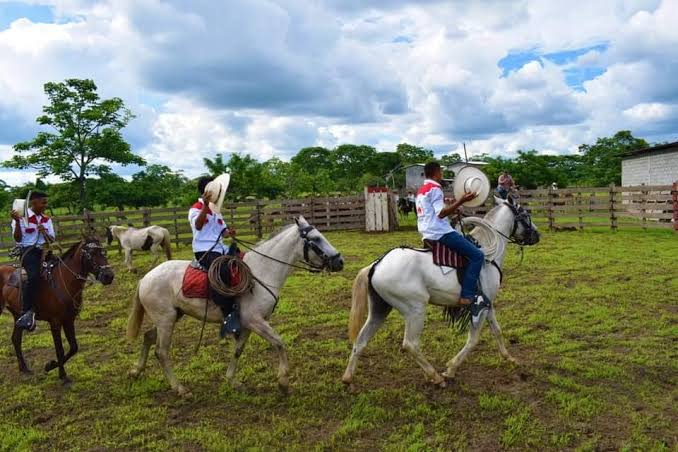
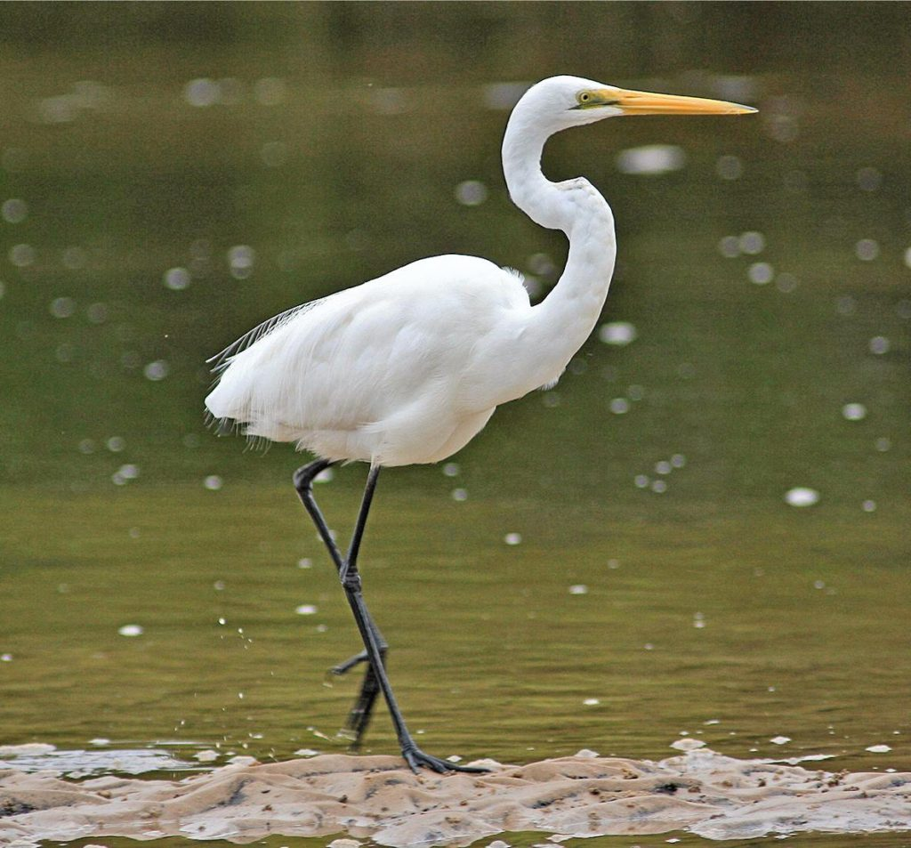

🌿
Naturaleza
Descubre espacios naturales como Jauneche y el Humedal Las Garzas.
Descubre espacios naturales como Jauneche y el Humedal Las Garzas.

Disfruta de paisajes rurales y del balneario de agua dulce La Reveza.

Conoce las expresiones culturales montubias, los rodeos y los amorfinos.

Descubre la identidad de Palenque a través de sus tradiciones y gastronomía.